USではおなじみの左右対称デザイン ４１２Ｗ ｘ １９７Ｈ ｘ ３３０Ｄ 約１１．３Ｋｇ
メイン・ダイヤル下の２つのボタンは、ダイヤル回転用モーターのＳＷです |
本機ですが、ビーム偏向管（７３６０）をミキサー回路に使用した、TOP-Mixタイプ（ＲＦ増幅無し）の本格的通新型受信機ということで、発売当時大きな話題になっていた記憶があります
バランス型ミキサーの有効性は知られていましたが、たぶんですが実際にＨＦ受信機に採用したのは、本機が最初ではないでしょうか
１９６３年に発表、その後数年にわたって、＄９００～＄１０００で販売されたようです
プロダクト検波に６ＢＹ６を採用し、ＢＦＯにクリスタルを追加した本機は、後期型のようです
偶然資料を見つけました
正式型番は、ＳＳ-１Ｒ／７０１ 販売時期は、１９６６～１９６７年のようです。
１２球＋７ゲルマニウムダイオード＋３シリコンダイオードで構成されたもので
３．５－４．０ＭＨｚ
７．０－７．５ＭＨｚ
１４．０－１４．５ＭＨｚ
２１．０－２１．５ＭＨｚ
２８．０－２８．５ＭＨｚ
２８．５－２９．０ＭＨｚ
２９．０－２９．５ＭＨｚ
２９．５－３０．０ＭＨｚ
５．０－５．５ＭＨｚ（シャーシ上面に切替ＳＷあり）
１０．０／１５．０ＭＨｚ ＷＷＶ（固定）
・・・内臓マーカーなくしてできる、周波数校正が考えられている
以上が、その受信範囲です
オプション・クリスタルで、以下の範囲で５００ＫＨｚ巾の受信が可能
A:７．５－１１．０MHｚ
B:１６．５ー２０．５ＭＨｚ
ＣＷ、ＳＳＢ（ＬＳＢ／ＵＳＢ）、ＡＭに対応
受信帯域幅については
０．３５ＫＨｚ、２．５ＫＨｚ、５ＫＨｚと、モードに合わせて３段階に切替できます |
|
ＲＦ増幅無しのTOP-Mix方式で、２８MHｚ帯にあっても２．５KHｚフィルタ使用時にS/N１０ｄｂを得るのに、０．５μV以下の信号でOKという高感度設計です
ＶＦＯ安定度についても、コールド・スタートから５００Ｈｚ以内、１０５～１２５Ｖの電圧変動にあっても１００Ｈｚ以内と、アナログ方式の時代にあっても素晴らしい性能です
定電圧回路（定電圧放電管）の採用はありません
また＋Ｂ電圧は１４０Ｖと、真空管にとって無理のない印加電圧です（間違いなく、球の寿命は長い）
ビーム偏向管をＭｉｘ 2段に採用した大きな目的は、ダイナミックレンジ、あるいは対クロスモジュレーションの改善
ｗｅｂ上には、テストデータの掲載もありますので、興味のある方は探してみてください
データを見ると一言で表せば、あのCollinsＳラインと同等かそれ以上
構成は、
第一ＩＦ：５．０－５．５ＭＨｚ （７ＭＨｚ帯はスルー、TOP-Mix段は使用せず）
第二ＩＦ:１．０MHｚ
ＶＦＯ：６．０－６．５ＭＨｚ
ＲＦ増幅なし、第二ＩＦ増幅３段
ノイズリミッタは、ＡＦ段ではなくＩＦ段で処理（ノイズ・サイレンサーなるものはオプション）
その他、特徴として
ダイヤルに、モータードライブ方式を採用
・・・使い勝手が良いかどうかは？ ダイヤル1回転が１０ＫHｚですので、大きなＱＳＹには有効
メカニカル方式で１ＫＨｚ直読ダイヤルの採用（同様の他の例：ＮＣＸ-５）
関係して、ＶＦＯ部には受信モードによる周波数補正を持ちます
ノッチフィルタを内臓
ＣＷモード選択時には、ＢＦＯは可変に
そのほか、ＡＧＣ回路をはじめ、そこここに凝ったというか、こだわった設計がなされています
電源電圧の安定化なしに、これだけの安定度を提供できるなど、普通では考えられません |
|
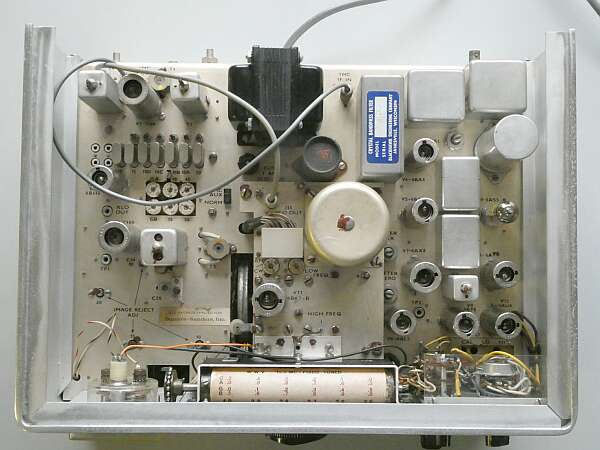 |
シャーシ上面です
ケーブル2本
一つは、ノイズサイレンサ接続時には外されます（１ＭＨｚＩＦ入出力）
あと一つはＶＦＯ出力で、きっと送信機とのトランシーブを意識したもの
中央やや左寄りに見えるスライドSWが、５MHｚ帯（１ｓｔ-ＩＦ帯）とその他のバンドの切替用
|
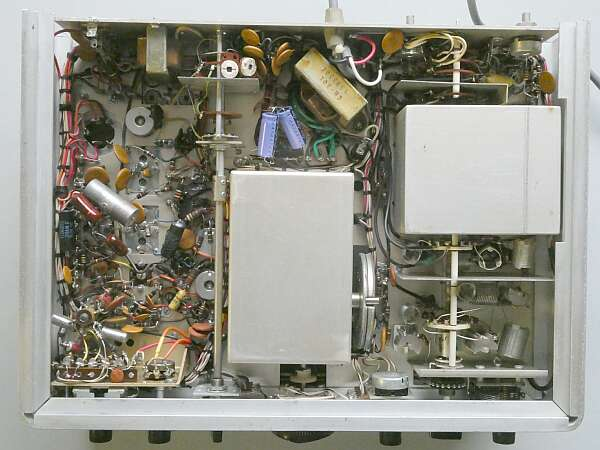 |
底面です
ＶＦＯ右横のダイヤルは、１ｓｔ-ＩＦトラッキング用のもの
ＶＦＯの軸に連動します
右下がアンテナトリマ部
左側が、２ｎｄ-ＩＦ段から検波、ＡＦ段
ＲＦ増幅段がない分、シンプルです |
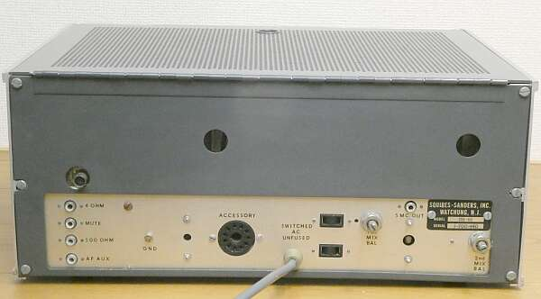 |
リアパネルの様子
外付けのオプション、送信機と連携など意識してあります
Ｍｉｘ部のバランス調整が容易にできるよう、ＶＲが2つ用意されています |
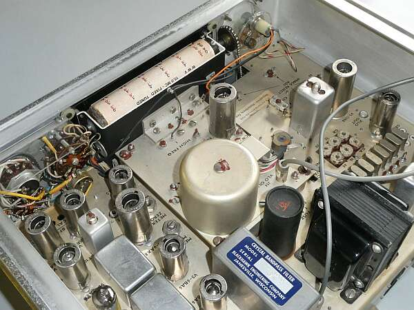 |
シャーシ上面をリア側から
バンド・ダイヤル切替の方式が分かります
クリスタル・フィルタは、２．５ＫＨ巾のもの
０．３５ＫＨｚのフィルタは、クリスタル2枚によるもの
５ＫＨｚ巾は、ＩＦＴ
中央のデカい円柱は、ＶＦＯ発振コイルのカバー
Sメーターは、バックライト方式が採用されています
|
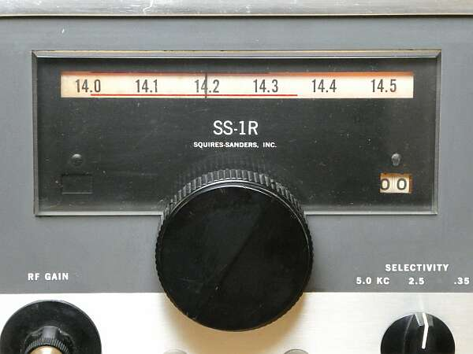 |
特徴的なメインダイヤル
メカニカル・カウンタで、１ＫＨｚ直読です
１４．２００MHｚです
読み取り方向の違いによる表示は、左右2つの窓で対応
ダイヤル枠の左端にもカウンタの窓が閉まった状態で写っています
どちらの窓を開けるかは、2枚下の写真にある「ビス」が制御します |
|
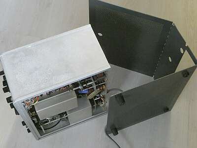 |
回路設計もユニークなら、ケーシングもユニーク
リアパネルにあるビス4本を外すだけで、このように分かれます
コの字に美しく加工された本体ケース
コストが、かかっていそうです |
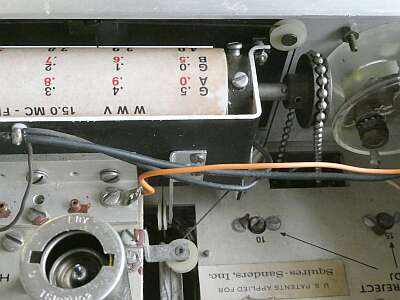 |
バンド・ダイヤルの切り替えは、バンド切替SWに連動した右端のチェーンで行います
ダイヤルの右端に見える「ビス」の頭
これには大事な仕事があって、フロントパネルのカウンダ表示窓を切り替える（開け閉めする）役目を担っています |
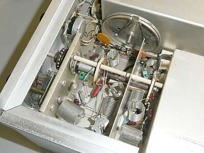 |
アンテナ同調部（パネル表記はアンテナ・トリム）
エアダックス（空芯）コイルが採用されています
糸掛けで駆動されているダイヤルは、１ｓｔ－IFトラッキング用VCを回すもので、ＶＦＯの動きに連動します |
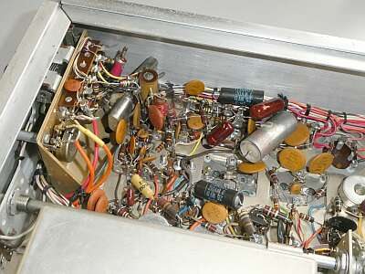 |
第二ＩＦから検波、ＡＧＣアンプ部
見えているクリスタルは、ＢＦＯ用
初期モデルは、自励発振のみだったようです
一見、Collins製品の配線を見ているような・・・ |
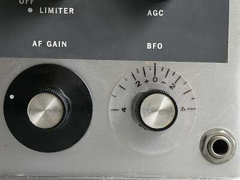 |
ＣＷモード選択時、ＢＦＯは可変に
これは実用的です |
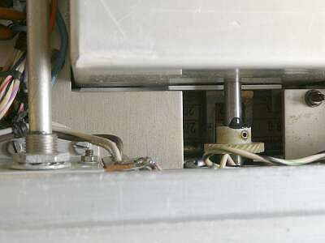 |
経年変化による問題の一例
メイン・ダイヤル・シャフトのジョイント部の劣化（ヘキサビスの周辺がひび割れている）により、バック・ラッシュが生じたような状況になっていました
ここは強引に接着剤を採用
カッターがあれば除去も容易です |
|